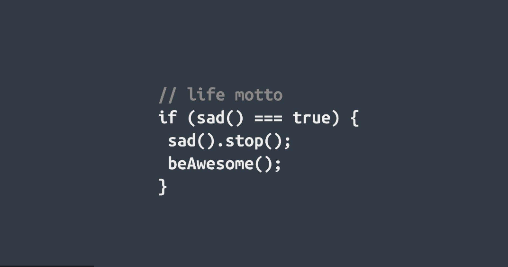
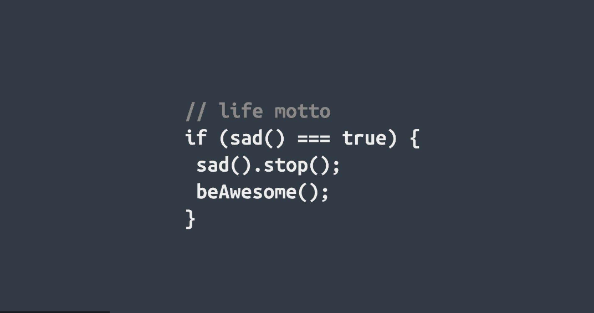
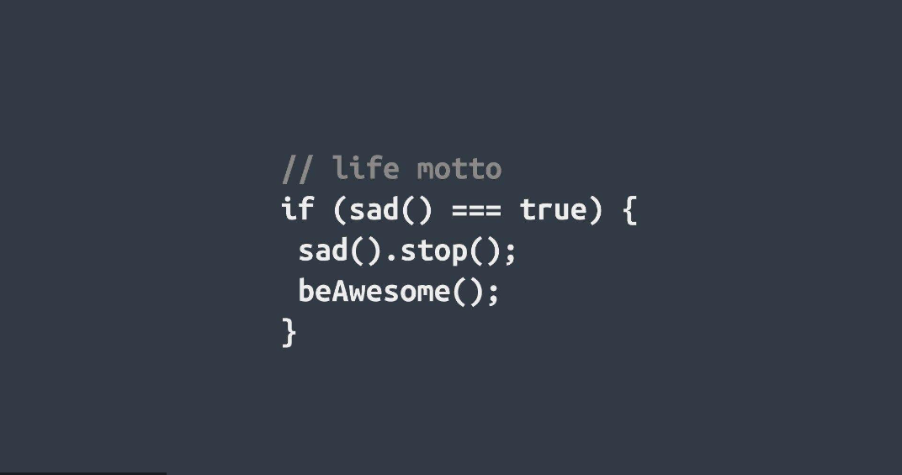
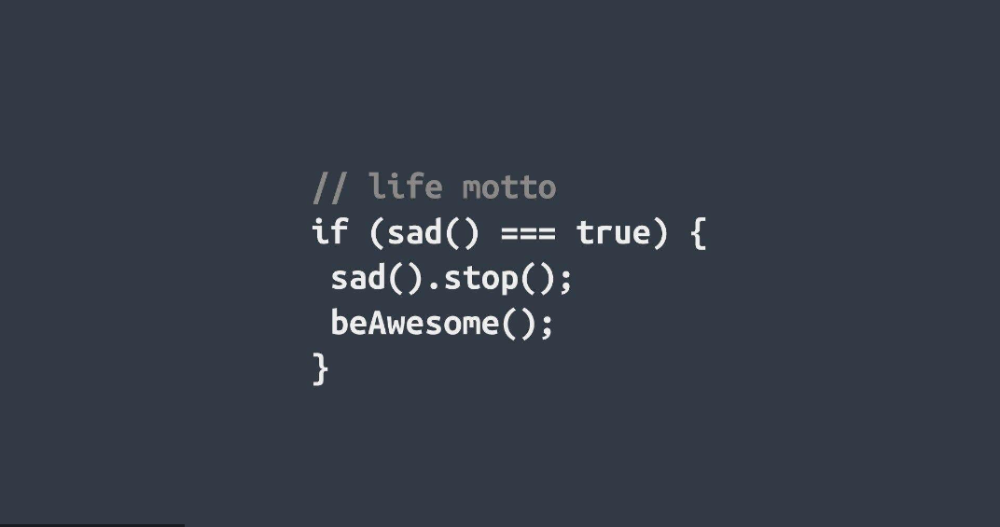

AI Software Engineer with 4+ years of experience in AI/ML systems and cloud-native solutions using Azure and AWS. Proven track record of designing, developing, and optimizing AI-driven applications and model deployment for scalable, high-performance services. Skilled in working with Large Language Models (LLMs), Generative AI (GenAI), and Retrieval-Augmented Generation (RAG), ensuring security and compliance in the cloud environment. Demonstrated expertise in CI/CD pipelines, infrastructure as code, and cloud-based AI models that meet reliability, safety, and scalability standards.
Currently working as a Software Test Engineer at LinkedIn, focusing on testing and validating cloud-native AI solutions. Completed my Master's degree in Computer Science at California State University, Fullerton in 2024.
Programming: Java, Python, C#, SQL, JavaScript, HTML/CSS, React.js, PowerShell, Bash
Cloud Platforms & AI/ML: Azure Machine Learning, Azure AI Search, OpenAI, LangChain, Lambda, Azure Functions, AKS, Azure Blob Storage
Machine Learning: Large Language Models (LLMs), Generative AI (GenAI), Retrieval-Augmented Generation (RAG), NLP, Model Training & Optimization
Tools & Technologies: Docker, Kubernetes, Jupyter Notebooks, Git, GitHub, MySQL, MongoDB, PostgreSQL, IntelliJ IDEA, VS Code
• LinkedIn - Software Test Engineer (Dec 2024 - Present): Testing and validating cloud-native AI solutions using Azure and AWS, ensuring security-first design principles and integrating cloud workflows for AI/ML model validation.
• LinkedIn - Software Engineer (Mar 2024 - Nov 2024): Engineered LLM-powered chatbot using Azure AI Search, OpenAI APIs, and RAG pipelines, boosting engagement by 40% and reducing query time by 30%.
• Google Residency Program (Aug 2022 - Jan 2024): Developed and deployed AI/ML models using Azure ML Studio, worked on NLP/LLM fine-tuning using LangChain and OpenAI.
• Teaching Associate CSUF (Aug 2022 - Jan 2024): Instructed 180+ students in AI/ML, database, and OOP concepts while assisting in faculty-led research.
• All In Motion IT Solutions - Software Developer (Jan 2020 - Jan 2022): Developed secure RESTful APIs using Java 11, Spring Boot, and Hibernate, improving system performance by 40%.
Certified Microsoft Azure AI Engineer Associate, Adobe Certified Professional AEM Developer, and Oracle Certified Expert Java Platform EE 6. I deliver efficient and user-friendly AI/ML solutions. Connect with me on LinkedIn or explore my GitHub and portfolio. I look forward to making a meaningful impact and contributing my expertise to your AI/ML projects
If you're in search of a dedicated professional to bring your digital visions to life or engineer cutting-edge software solutions, I'd be thrilled to collaborate with you. Let's join forces to create technological wonders and achieve new heights together!
Let's bring your ideas to life!
Currently working at LinkedIn as a Software Test Engineer, focusing on testing and validating cloud-native AI solutions deployed using Azure and AWS cloud services, ensuring security-first design principles.
Integrated cloud workflows and data pipelines (AWS S3, Azure Blob) to validate AI/ML models used for real-time predictions, ensuring accuracy, scalability, and audit readiness for AI-driven services. Developed test cases for AI-driven applications using Azure AI Search and OpenAI APIs.
Delivered high-performance, maintainable Java and Python code that reduced processing times by directly enhancing system efficiency and user experience. Engineered an LLM-powered chatbot using Azure AI Search, OpenAI APIs, and RAG pipelines, boosting engagement by 40% and reducing query time by 30%.
Developed a LangChain + Azure OpenAI pipeline to transform website content into embeddings and a vector store for real-time, context-aware Q&A, with custom prompt engineering and model fine-tuning. Led the development of cloud-native solutions in AEM 6.5 and AEMaaCS, improving deployment speed by 20%.
Developed and deployed AI/ML models using Azure ML Studio for end-to-end model training and deployment in cloud environments. Worked on NLP/LLM fine-tuning using LangChain and OpenAI, improving model responses through advanced prompt engineering.
Built data pipelines for vector search and embedding generation using Azure AI Search and Cosmos DB, integrating these into the larger AI workflow for better data retrieval and response accuracy. Optimized cloud deployment of AI models using containerized solutions in Docker/Kubernetes.
Instructed 180+ students in AI/ML, database, and OOP concepts while assisting in faculty-led research on app structure and scalability for AI/ML systems.
Analyzed and developed new tutoring methods with various materials for students at university. Collaborated with teaching teams on debugging problems, reviewing, and writing optimized readable code.
Lectured, directed exams, and prepared lessons for students on web frontend technologies such as flexbox, Grid, JavaScript, React.js, Transitions, Transform and Animation.
Led the development of a cloud-native AI recommendation engine, utilizing Azure ML Studio for training and deployment. Integrated Azure AI and OpenAI APIs to enhance model inference accuracy and achieve real-time, scalable recommendations.
Applied machine learning techniques to optimize predictive analytics and enhance model performance through model evaluation metrics. Built secure RESTful APIs applicable to building data pipelines for AI models.
Spearheaded backend modularization, reducing load time by 40%, crucial for real-time data processing in AI/ML applications. Built testing frameworks, reducing post-release bugs by 11%.
Developed an AI-powered chatbot utilizing Azure AI Search for contextual data retrieval and OpenAI APIs for generating human-like responses. Integrated RAG pipelines for real-time, contextual data retrieval and inference.
Optimized response times by 30% through fine-tuning the LLM model and integrating custom prompt engineering. Deployed the chatbot with end-to-end CI/CD pipelines using Azure DevOps, ensuring seamless model updates and real-time AI deployment.
Built using Azure AI Search, OpenAI APIs, LangChain, and Azure DevOps for comprehensive AI solution deployment.
Advanced AI/ML project showcasing expertise in Large Language Models and cloud-native AI solutions
Github RepositoryBuilt and deployed a fraud detection system on Azure ML, improving real-time fraud detection and reducing false positives by 20%. Applied Azure AutoML for hyperparameter tuning and feature engineering, optimizing model accuracy for real-time financial data.
Deployed the model using Azure Kubernetes Service (AKS) to handle multi-region, scalable deployment. Integrated advanced machine learning techniques for predictive analytics in financial fraud detection.
Technologies used: Azure Machine Learning, Azure AutoML, Azure Kubernetes Service, Python, Machine Learning algorithms

Executed Flyod-Warshall Algorithm to find most reliable path from given pool of more than 10 cities in Python.
Measured path with maximum probability between two cities of flight's arrival time.
Calculated and analyzed most reliable city from given pool of cities by modifying Flyod-Warshall algorithm in Python
Github RepositoryDeveloped a dynamic and responsive Blog Application using PHP, MySQL, and CodeIgniter.
Implemented a user-friendly "New Post" feature for creating blog posts with titles, descriptions, images, and tags.
Created a well-organized page with pagination for easy navigation through a comprehensive list of blogs.
This websites dynamic background was created using the Threejs library. The center planet, its wireframe halo and the tetrahedron 'asteroids' are all rendered seperately and animated with random offsets and rotations that are different each time the site is loaded. The layout is a single column design of flexboxes that contain reactive content cards.